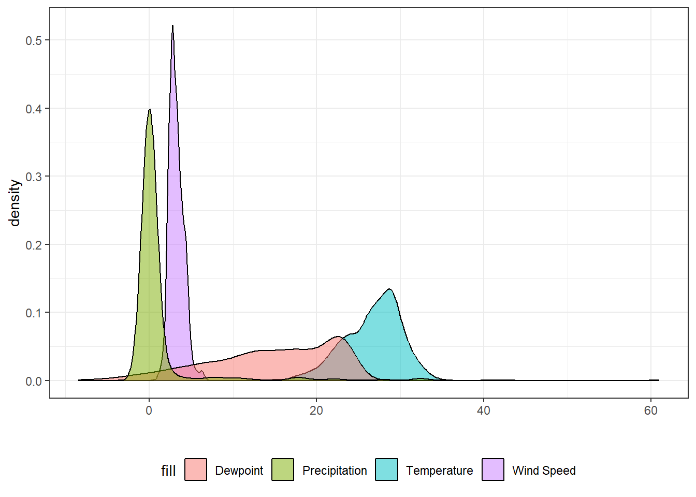
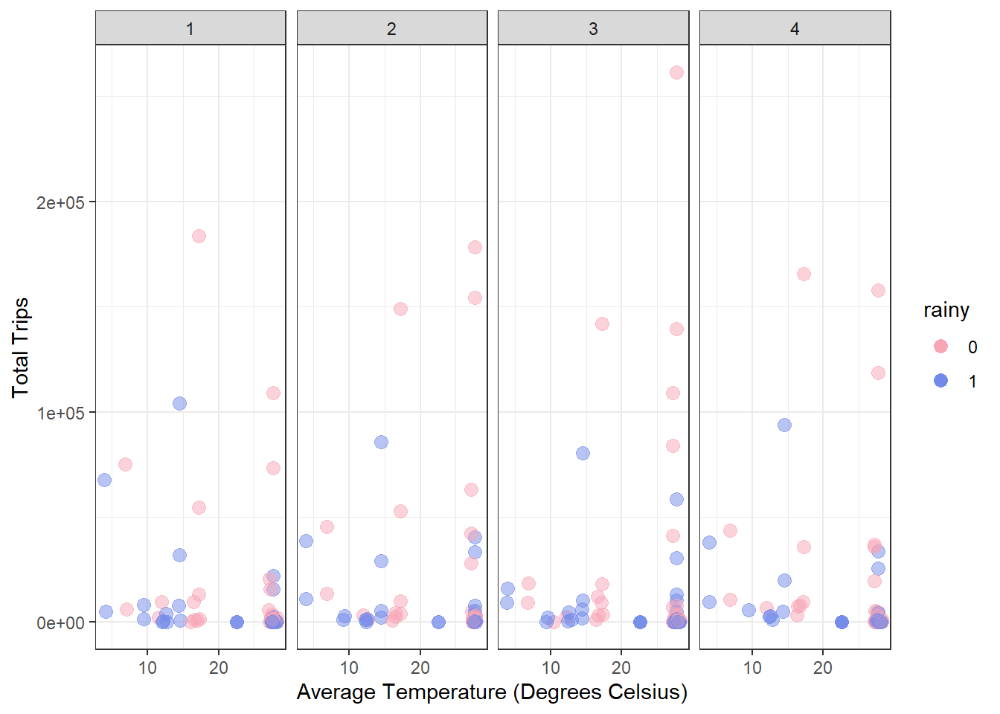
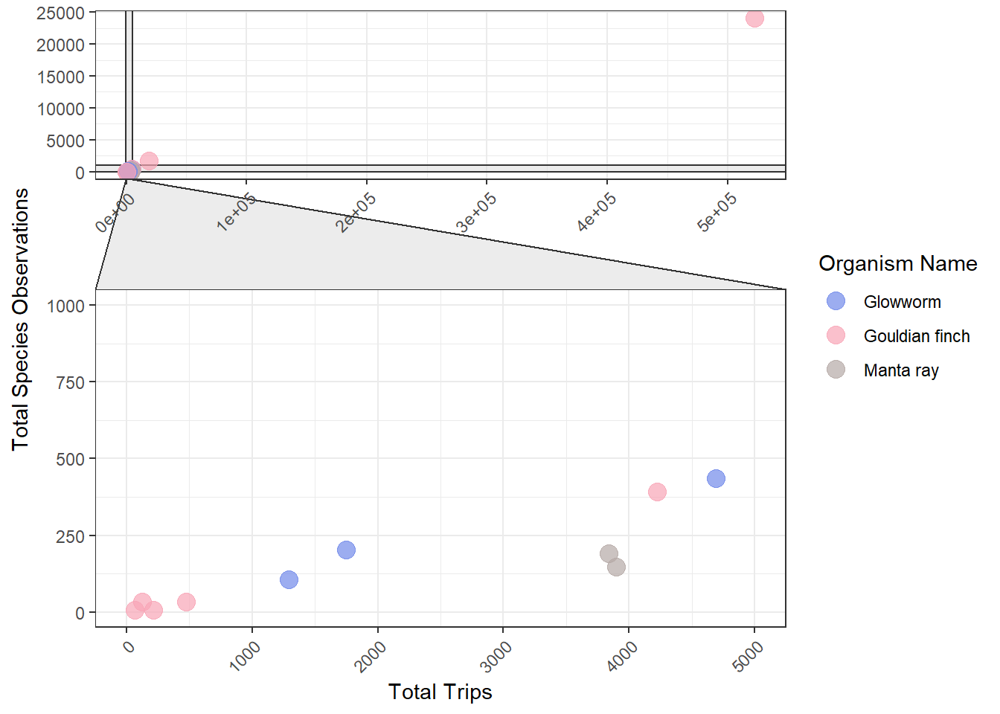

| temp | dewp | rh | prcp | wind_speed | organism_name |
|---|---|---|---|---|---|
| 24.9 | 19.1 | 70.2 | 0 | 2.8 | Gouldian finch |
| 23.1 | 16.1 | 64.7 | 0 | 2.5 | Gouldian finch |
| 23.1 | 17.7 | 71.7 | 0 | 2.3 | Gouldian finch |
| 25.8 | 16.2 | 55.4 | 0 | 2.8 | Gouldian finch |
| 25.4 | 20.1 | 72.5 | 0 | 2.9 | Gouldian finch |
| 25.4 | 20.1 | 72.5 | 0 | 2.9 | Gouldian finch |
Ecotourism
The July 28th Tidy Tuesday challenge was centered around ecotourism in Australia. The data was sourced from the ecotourism R package. The R package provides tools to analyse ecological observation data alongside weather conditions and tourism data.
Question One
The first Question in the ecotourism challenge is Under which weather conditions are you most likely to observe a Gouldian finch?
I combined the occurrences and weather csv files into one data set. I did a right_join() function on the two csv files and joined it by the ws_id, date, year, month, day, weekday, and dayofyear variables. After I joined these two files into one data set I then wanted only the data for the Gouldian finches and weather variables.
The following six rows of data is a snippet of the data set I used to answer the question. The temperature and dew point columns are measured in degrees Celsius. The rh(raw humidity) is a percentage and precipitation is measured in mm while wind speed is measured in m/s.
After combining the data and selecting specific weather variables and filtering for just the Gouldian Finch, I created density plots of the weather variables. This is to indicate which weather conditions the observations of the Gouldian finch is highest. The variable rh was not used as one of the density plots since dew point directly affects the raw humidity.

From the graph we can notice that high observations of Gouldian Finches occur with relatively no precipitation and low wind speeds. High densities at the low end of precipitation and wind speed are plausible due to the fact that the Gouldian finch is a fairly small bird and may not fly with ease in high winds or high precipitation.
There is also a fairly high density of Gouldian finch observations when the temperatures are in the mid to high 20s. This density could be due to increase of tourists in warmer weather rather than Gouldian finches just liking warm weather.
The density plot of Gouldian finch observations with dew point is fairly spread out not telling us much information. The finch could not be effected by dew point or trips that observe the finch merely occur at various dew points.
Question Two
The second question in the ecotourism challenge is How does weather affect tourism numbers in each region?
To answer this question I combined the weather and tourism csv files. This was done by another right_join() function joining by the ws_id and year variable. After combining the two files, the new data set was grouped by the region, purpose of the visit, whether it was rainy or not, and the quarter of the year the trip occurred in. From this the total number of trips for each group was summarized and the average temperature of the trips in each group was calculated.
The following six rows of data are a snippet of the data set created and used to answer the question. The column total_trips is in thousands and the avg_temp column is in degrees Celsius.
| region | purpose | rainy | quarter | total_trips | avg_temp |
|---|---|---|---|---|---|
| Anula | Holiday | 0 | 4 | 31.1850 | 27.62896 |
| Anula | Holiday | 1 | 4 | 7.0350 | 27.64925 |
| Augusta | Business | 0 | 1 | 1450.8503 | 17.29648 |
| Augusta | Business | 0 | 2 | 3929.8136 | 17.23252 |
| Augusta | Business | 0 | 3 | 3563.1971 | 17.34637 |
| Augusta | Business | 1 | 1 | 744.7144 | 14.60800 |
After combining the data and the grouping by specific variables I created a scatter-plot. Each dot on the scatter-plot represent a grouped region with the x-axis being the average temperature of the grouped trips and the y-axis being the total trips of each grouped region. The points are then separated into whether the trips in the region were rainy (1) or not (0). The scatter-plot was then faceted to look at the four quarters of the year individually.

From the scatter-plots we can tell that several regions had small total trip numbers which could be do to the popularity of the region. However, the total trip counts by region that are greater than 10,000,000 are mostly non rainy trips.
We can also see a general increase in trips, both total number and overall increase in observations, when the temperature is greater than 15 degrees Celsius.
Also, to note, the third quarter of the year shows the highest total_trips for a region. This high trip count may be due to visiting country’s summer months since people may be more likely to travel in July, August, and September to cooler weather (Australia is in winter during that time) in order to escape the heat.
Question Three
The third question in the ecotourism challenge is How do observations of the different animals relate to numbers of tourists?
To answer the question I combined the occurrences and tourism csv files with the right_join function by the ws_id and year columns. From this I then grouped the states where animals were observed, the type of observation (Human, Machine, etc.), and the type of organism. I then got the sum of tourist trips for each group and the total observations of each animal in the groups.
The following six rows of data are a snippet of the data set created and used to answer the question. The column total_trips is reported in thousands.
| obs_state | record_type | organism_name | total_trips | total_obsv |
|---|---|---|---|---|
| Australian Capital Territory | HUMAN_OBSERVATION | Gouldian finch | 123.7700 | 33 |
| New South Wales | HUMAN_OBSERVATION | Glowworm | 1748.0298 | 202 |
| New South Wales | HUMAN_OBSERVATION | Gouldian finch | 473.6721 | 34 |
| New South Wales | HUMAN_OBSERVATION | Manta ray | 3896.4581 | 148 |
| New South Wales | MACHINE_OBSERVATION | Manta ray | 12008.2212 | 668 |
| New South Wales | OBSERVATION | Manta ray | 373.7776 | 74 |
From this data I created a scatter-plot to view the total observations of each species by the number of total trips with the points colored by the organism name that the observation represents. The Orchids were dropped from the data when making the scatter-plot since the question specifies animal observations. The data was also filtered to only look at human observations since the question asks about the relation of the observation of animals and number of tourists, thus a machine observation would not fit the parameters of the question.
When the first scatter-plot was created the majority of the points were in the bottom left corner of the plot with only one or two at extreme ends. From this I used the ggforce package’s facet_zoom() function to zoom into the bottom left corner without cutting out any data.

We can see a positive correlation between the number of tourist trips and number of organism observations. This can be due to the fact that the more people there are the more likely it is to see an organism. The one organism that has observations decrease while tourist trips increase are the Manta Rays. This could be due to the location of the trips, which Australian state it took place in, and whether there are more manta rays in one state than the other. The two points are also fairly close to each other on the scatter plot and the slight decrease could have many other factors impacting it.
Summary
Question One
Ultimately the observation of Gouldian finches occur under little to no precipitation and low winds. The temperature where gouldian finches were mostly observed was in the mid 20s to the low 30s (degrees Celsius). Dewpoint appears to have little affect on the observations of Gouldian finches.
Question Two
Warmer weather creates more tourist trips in regions as well as non-rainy weather. Quarter three showed the highest number of tourist trips in a region which could be due to typical vacationing times and the season among other factors.
Question Three
The number of observations of animals increases with the increase in tourist trips, resulting in a positive correlation between the two variables. The organism with the most observations and tourist trips occuring was the Gouldian finch at nearly 25,000 observations and over 500,000 tourist trips.
Sources
Cook D, Cook L, Vahdat Atashgah J (2025). ecotourism: Collection of Data on Wildlife Sightings, Tourism Counts, and Weather from Australia. doi:10.32614/CRAN.package.ecotourism https://doi.org/10.32614/CRAN.package.ecotourism. R package version 0.1.0, https://CRAN.R-project.org/package=ecotourism.
Harmon J, Hughes E (2026). tidytuesdayR: Access the Weekly ‘TidyTuesday’ Project Dataset. doi:10.32614/CRAN.package.tidytuesdayR https://doi.org/10.32614/CRAN.package.tidytuesdayR. R package version 1.3.2, https://CRAN.R-project.org/package=tidytuesdayR.